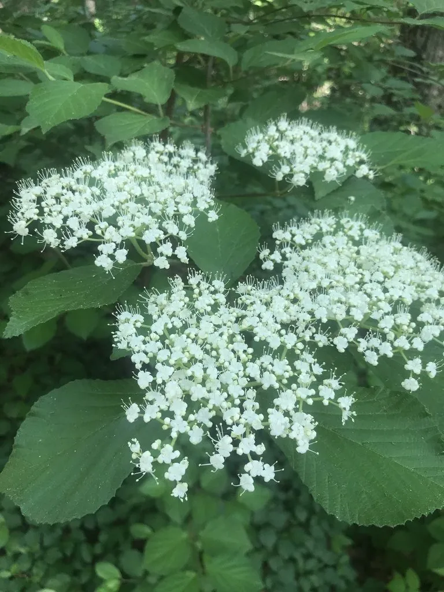

灌木与花木 · 植物界
荚蒾 Viburnum dilatatum

忍冬科落叶灌木，春季开白色小花，秋季结满鲜红果实，耐寒耐瘠薄，是观花观果兼用的乡土树种。
- 分类
- 门被子植物门纲木兰纲目川续断目科忍冬科属荚蒾属
- 栖息环境
- 海拔 2000 米以下的山坡林下、灌丛与沟谷，喜光也耐半阴
- 地理分布
- 中国华北、华东、华中至西南；朝鲜半岛、日本有分布
- 保护级别
- 暂无评估；中国未列入国家重点保护野生植物名录
物种志
荚蒾为忍冬科荚蒾属落叶灌木，高 2–3 米，树皮灰褐色，小枝被短柔毛。叶片对生，宽倒卵形至椭圆形，边缘具齿，表面被糙毛。复伞形式聚伞花序，花小，白色，花期 5–6 月；核果椭圆形，成熟时鲜红，果期 9–11 月。
荚蒾原产中国华北、华东、华中至西南各地，朝鲜半岛、日本也有分布，生于山坡林下与灌丛。它喜光，也耐半阴，耐寒、耐瘠薄，对土壤要求不严。春季白花满枝，秋季红果累累，是优良的观花观果灌木，常植于庭院、林缘与草坪边缘。果实酸甜，可少量食用或用于加工，但不宜多食；根、茎与叶可入药，有清热解毒、祛瘀消肿之效。
形态与习性
- 株高2–3 m，小枝被短柔毛
- 花期5–6 月，白色小花组成聚伞花序
- 果期9–11 月，核果鲜红
- 光照喜光，也耐半阴
- 水分喜湿润，忌积水
- 土壤适应性强，以疏松壤土为好
- 主要用途庭院观花观果，根茎叶入药
趣味知识
- 荚蒾秋季的红果可一直挂到初冬，是鸟类越冬的食物。
- 它的果实酸甜可食，但过量食用可能引起肠胃不适。
- 荚蒾耐寒耐瘠薄，是北方山地常见的乡土灌木。
- 荚蒾与琼花同属，但花序结构与果实颜色差异明显。